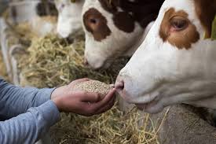

Our Mission
FORGING NEW LIVES FOR
We are shelter and foster focussed, working to build a strong,
stray dogs & cats living on India’s streets
Hover over me!
The streets of Jaipur force India’s stray animals to contend with temperatures up to 115 degrees,
scarce food and rampant abuse. We’ve built relationships with volunteers and animal welfare workers on
the front lines to bring rescue crews, food, medical care, training to India’s neglected dogs, cats, and
livestock.
• Assist Special Cases No One Else Will
• Bolster India’s rescue, foster and adoption network
• Expand access to animal birth control, vaccinations, and more
• Prevent and investigate animal cruelty
• Recruit and train animal rescue and control teams
• Educate the Indian public to combat stereotypes, reduce abuse, and increase adoption
|  |  |